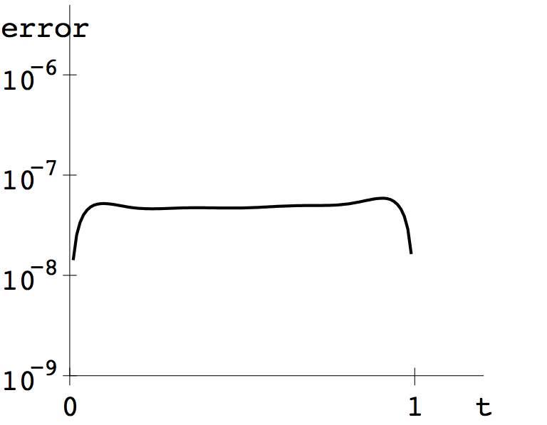
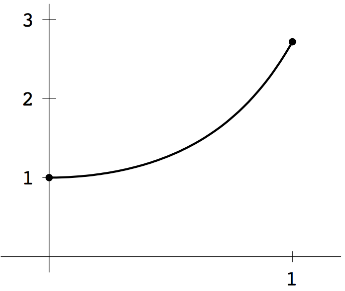
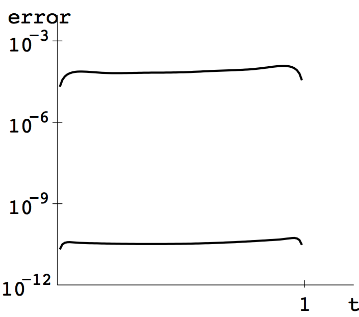
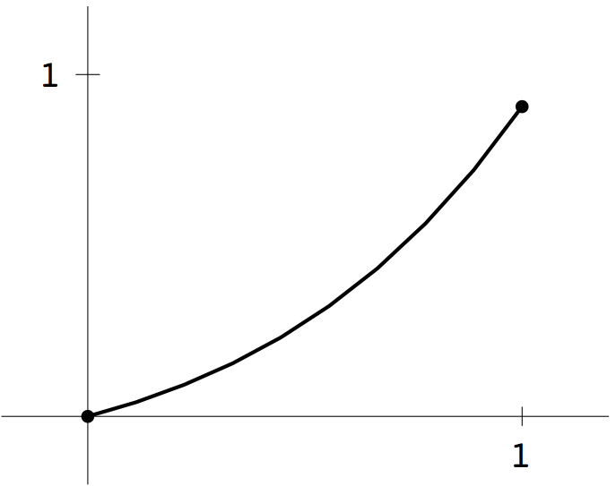
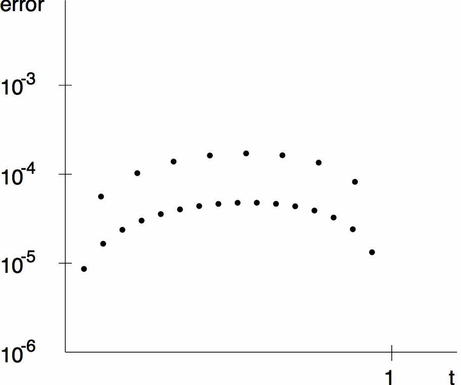
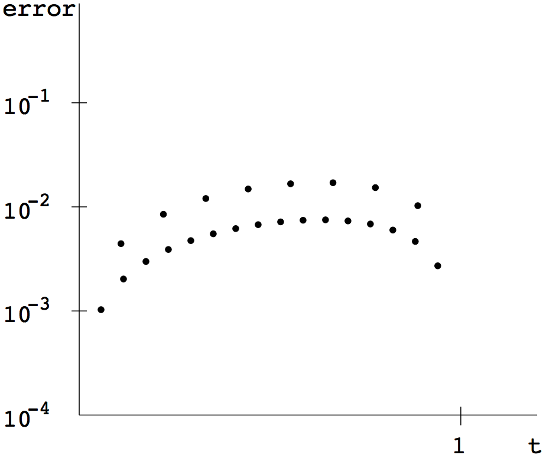

COMPUTER PROBLEMS 7.3
\(\def\ds{\displaystyle} \)
1 (a) Collocation is applied to \(y''=y+\frac{2}{3}e^t\) by expanding
the solution into monomial basis functions
\[y(t)=\sum_{j=1}^n c_jt^{j-1}.\]
Substituting the boundary conditions gives \(c_1=0\) and \(c_1+\ldots
+c_n=e/3\). The remaining \(n-2\) equations use the differential
equation:
\[
\sum_{j=1}^n
c_j\left[(j-1)(j-2)t_i^{j-3}-t_i^{j-1}\right]=\frac{2}{3}e^{t_i}
\]
for \(i=2,\ldots,n-2\). Using evenly-spaced base points \(t_i=(i-1)/(n-1)\)
results in \(n\) equations in the \(n\) unknowns \(c_j\). After solving for
\(c_j\) by Gaussian elimination, the solution \(y(t)=\sum c_jt^{j-1}\) is
plotted on \([0,1]\) for \(n=8\) and \(16\), shown below. In addition, the differences between
the approximate and exact solution are plotted for \(n=8\). The differences
for \(n=16\) are near machine epsilon (not shown).

1 (b) Similar to (a). The first and last equations are \(c_1=1\)
and \(c_1+\ldots+c_n=e\). The remaining \(n-2\) equations are
\[\sum_{j=1}^n c_j\left[(j-1)(j-2)t_i^{j-3}-
2t_i^{j-1}-4t_i^2t_i^{j-1}\right]=0.\]
Substituting \(t_i=(i-1)/(n-1)\) for \(i=2, \ldots, n-1\) and solving
for \(c_j\) gives the approximate solutions shown below.


3 (a) For a positive integer \(n\), set the step size
\(h=1/(n+1)\), grid points \(t_i=ih\),
and use the boundary conditions \(c_0=0, c_{n+1}=e/3\).
Consider the Finite Element Method equations (7.22) with linear
B-splines:
\begin{eqnarray*}
0&=& \int_0^1\left[\phi_i(t)\left(\sum_{j=0}^{n+1} c_j\phi_j(t)
+\frac{2}{3}e^t\right)+\phi_i'(t)\sum_{j=0}^{n+1} c_j\phi_j'(t)\right]\ dt\\
&=&\frac{2}{3}\int_0^1 \phi_i(t)e^t\ dt+\sum_{j=0}^{n+1} c_j
\left[\int_0^1\phi_i(t)\phi_j(t)\ dt+\int_0^1\phi_i'(t)\phi_j'(t)\ dt\right].
\end{eqnarray*}
for \(i=1,\ldots,n\). Using the B-spline definition, we calculate
\[\int_0^1\phi_i(t)e^t\ dt = e^{t_i}\frac{e^h-2+e^{-h}}{h}\]
for each \(i\). We must solve the tridiagonal system
\[\left[ \begin{array}{ccccc}
\alpha&\beta&0&\cdots&0\\
\beta&\alpha&\ddots&\ddots&\vdots\\
0&\beta&\ddots&\beta&0\\
\vdots&\ddots&\ddots&\alpha&\beta\\
0&\cdots&0&\beta&\alpha\\
\end{array}\right]
\left[ \begin{array}{c} c_1\\
c_2\\
\vdots\\
c_{n-1}\\
c_n\\
\end{array} \right] =
\left[ \begin{array}{c} -y_a\beta\\
0\\
\vdots\\
0\\
-y_b\beta\\
\end{array} \right]-\frac{2(e^h-2+e^{-h})}{3h}
\left[ \begin{array}{c}
e^h\\
e^{2h}\\
\vdots\\
e^{(n-1)h}\\
e^{nh}\\
\end{array} \right]
\]
where \[ \alpha = \frac{2}{3}h+\frac{2}{h}\text{ and } \beta =
\frac{h}{6}-\frac{1}{h}.
\]
Solving for the values \(c_1,\ldots, c_n\) of the approximate solution
results in the plots below for \(n=8\) and \(16\).


3 (b)
For a positive integer \(n\), set the step size
\(h=1/(n+1)\), grid points \(t_i=ih\),
and use the boundary conditions \(c_0=1, c_{n+1}=e\).
The FEM equations (7.22) are:
\begin{eqnarray*}
0&=& \int_0^1\left[\phi_i(t)\left(2+4t^2\right)\sum_{j=0}^{n+1} c_j\phi_j(t)
+\phi_i'(t)\sum_{j=0}^{n+1} c_j\phi_j'(t)\right]\ dt\\
&=&\sum_{j=0}^{n+1} c_j
\left[\int_0^1(2+4t^2)\phi_i(t)\phi_j(t)\ dt+\int_0^1\phi_i'(t)\phi_j'(t)\ dt\right].
\end{eqnarray*}
for \(i=1,\ldots,n\). We calculate
\begin{eqnarray*}\int_0^1t^2\phi_i(t)\phi_{i+1}(t)\ dt &=& \frac{h^3}{20}+\frac{ht_i^2}{6}
+\frac{h^2t_i}{6}\\
\int_0^1t^2\phi_i(t)\phi_{i-1}(t)\ dt &=& \frac{h^3}{20}+\frac{ht_i^2}{6}
-\frac{h^2t_i}{6}
\end{eqnarray*}
and
\[\int_0^1t^2\phi_i(t)^2\ dt = \frac{h^3}{15}+\frac{2}{3}ht_i^2\]
for each \(i\). The \(c_j\) satisfy the tridiagonal system
\[\left[ \begin{array}{ccccc}
\alpha_1&\gamma_1&0&\cdots&0\\
\beta_2&\alpha_2&\gamma_2&\ddots&\vdots\\
0&\beta_3&\ddots&\ddots&0\\
\vdots&\ddots&\ddots&\alpha_{n-1}&\gamma_{n-1}\\
0&\cdots&0&\beta_{n}&\alpha_n\\
\end{array}\right]
\left[ \begin{array}{c} c_1\\
c_2\\
\vdots\\
\vdots\\
c_{n-1}\\
c_n\\
\end{array} \right] =
\left[ \begin{array}{c} -y_a\beta_1\\
0\\
\vdots\\\vdots\\
0\\
-y_b\gamma_{n}\\
\end{array} \right]\]
where \[ \alpha_i = \frac{4}{3}h+\frac{4}{15}h^3+\frac{8}{3}ht_i^2+\frac{2}{h},
\gamma_i =
\frac{h}{3}+4h\left(\frac{h^2}{20}+\frac{t_i^2}{6}+\frac{ht_i}{6}\right)-\frac{1}{h}.
\text{ and } \beta_i =
\frac{h}{3}+4h\left(\frac{h^2}{20}+\frac{t_i^2}{6}-\frac{ht_i}{6}\right)-\frac{1}{h}.
\]
Solving for the values \(c_1,\ldots, c_n\) of the approximate solution
results in the plots below for \(n=8\) and \(16\).
